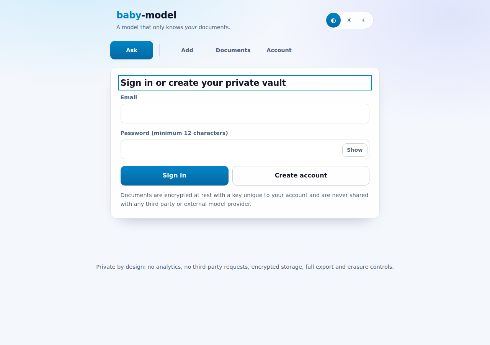
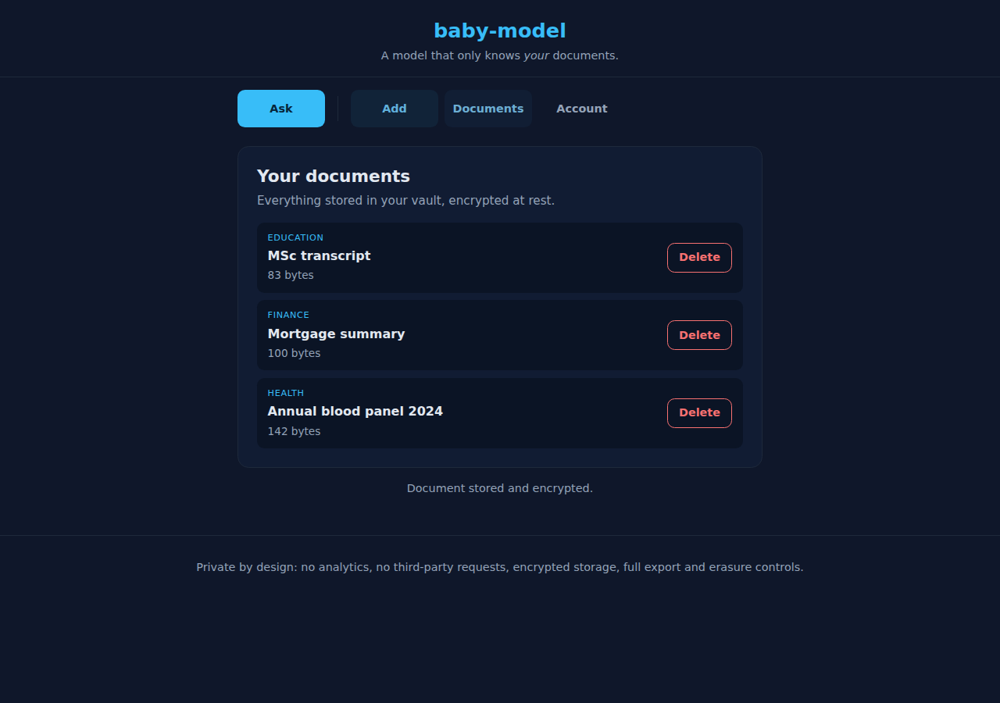
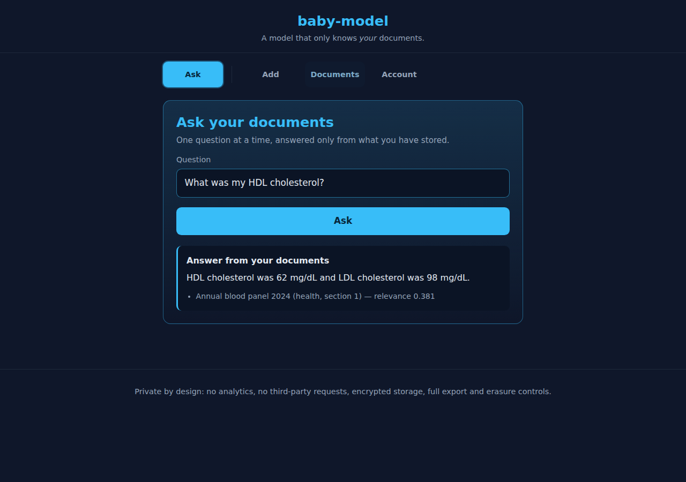
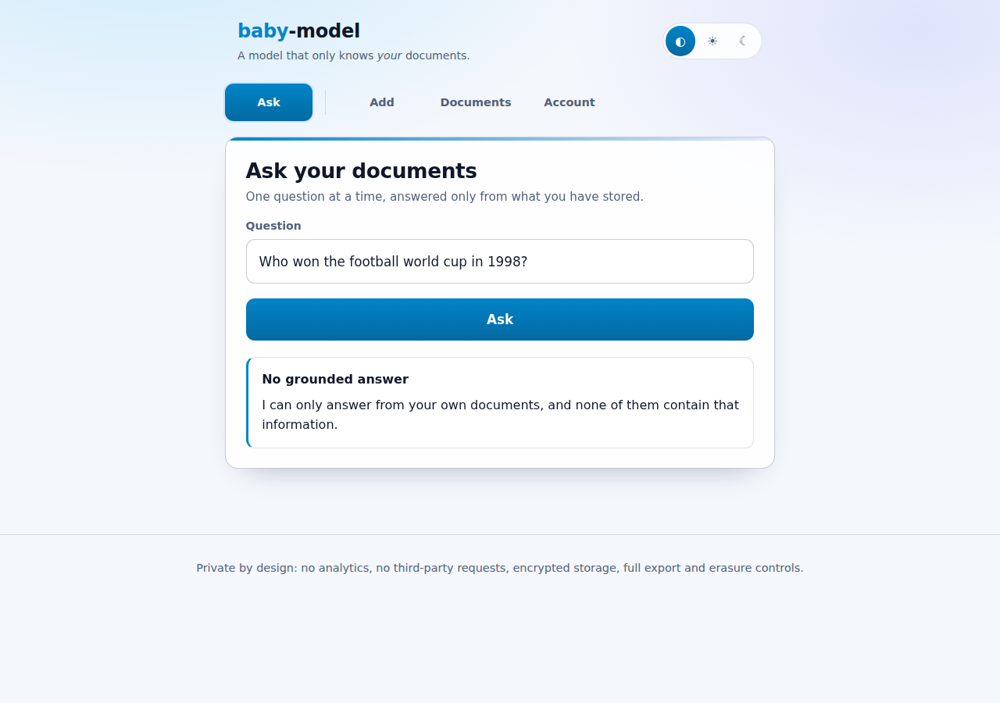
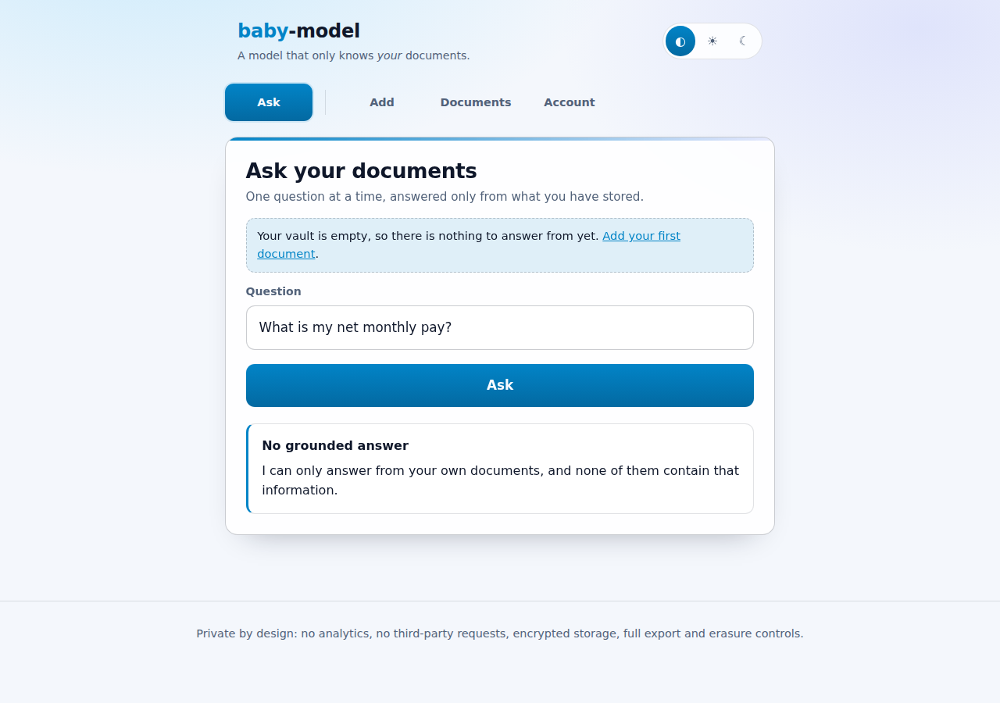
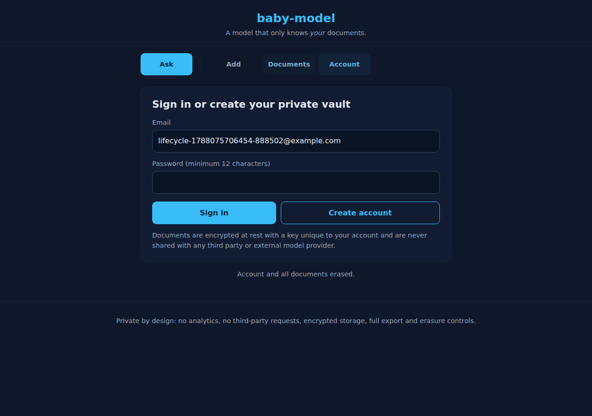
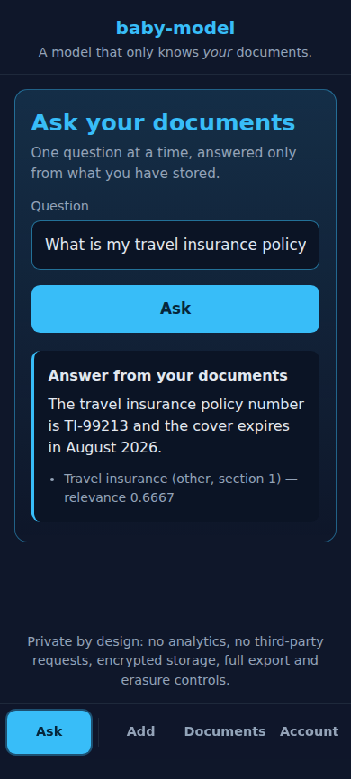
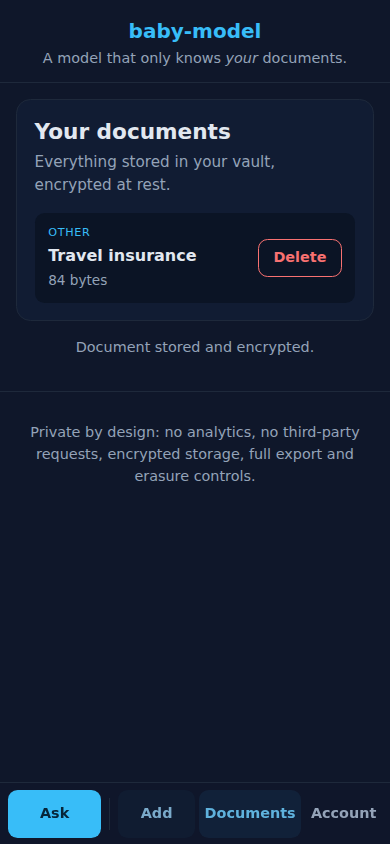

baby-model
A model that only knows your data.
baby-model is a self-hosted portal that learns from the documents you give it —
health records, finance statements, professional paperwork, education certificates
and anything else — and answers questions only from those documents. Every
answer is extracted verbatim from your own files and cited; when your documents
do not contain the answer, the model says so instead of guessing.
Nothing is sent to any third-party model provider: retrieval, ranking and answer extraction all run locally inside the application process.
Screenshots
Sign in or create a private, encrypted vault

Health, finance, professional and education documents stored encrypted

Answers are extracted from your documents and always cited

Questions your documents cannot answer are refused instead of guessed

A second account can neither see nor query another user documents

One click erases the account and every stored document

Asking a question is a page of its own and the primary action on mobile

Every page does one thing, with a thumb-friendly tab bar on small screens

Features
- Private document vault — upload or paste UTF-8 text documents, tagged as
health,finance,professional,educationorother. - Grounded question answering — TF-IDF retrieval over your own chunks plus extractive answering, with citations back to the document and section.
- One job per page — asking a question, adding a document, browsing the vault and managing the account each get their own page, reached from a tab bar.
- Mobile first — a thumb-friendly bottom tab bar, full-width controls, large tap targets and safe-area padding on phones; the same tabs move to the top on larger screens.
- Explicit refusals — if nothing relevant is found, the model answers “I can only answer from your own documents…”, never inventing facts.
- Strict isolation — every query and document lookup is scoped by the owner's user id, so one account can never read another account's data.
- Data rights built in — one-click export (portability) and irreversible account erasure (right to be forgotten).
Security and privacy design
| Concern | Control |
|---|---|
| Password storage | scrypt (N=16384, r=8, p=1) with a per-password random salt |
| Session handling | 256-bit random tokens, only their SHA-256 hash is stored, HttpOnly + SameSite=Strict (+ Secure in production) cookies, server-side expiry and revocation |
| CSRF | Per-session CSRF token required on every state-changing request |
| Encryption at rest | Documents and chunks are encrypted with AES-256-GCM using a per-user data key, which is itself wrapped with the server MASTER_KEY |
| Database | SQLite file created with 0600 permissions inside a 0700 data directory |
| Authorisation | Every document, chunk and export query filters on user_id; cross-account access returns 404 |
| Transport & headers | helmet with a strict CSP (default-src 'self', no framing, no object sources), Referrer-Policy: no-referrer, Cache-Control: no-store |
| Abuse protection | Global, per-question and per-authentication rate limits, upload size limits, UTF-8 text-only uploads |
| Crawlers & AI scrapers | robots.txt disallows every user agent (including GPTBot, Google-Extended, ClaudeBot, CCBot, PerplexityBot and friends) and every response carries X-Robots-Tag: noindex, nofollow, noarchive, nosnippet, noimageindex, notranslate, noai, noimageai. Nothing beyond the sign-in page is reachable without a session anyway |
| Prompt injection | Instruction-like passages, hidden control characters and exfiltration URLs found in stored documents are redacted from answers, excerpts and titles; answers stay extractive and never leave the server |
| Auditability | Append-only audit_log of registrations, logins, document changes, questions, exports and erasures (no document content is logged) |
| No third parties | No analytics, no external fonts or CDNs, no outbound model API calls |
Data-protection compliance notes
- Data minimisation — the only personal identifier stored is the email address used to sign in; documents are opaque ciphertext at rest.
- Purpose limitation — stored content is used solely to answer that user's own questions.
- Right of access & portability —
GET /api/account/exportreturns the full account content as JSON. - Right to erasure —
DELETE /api/accountremoves the user, documents, chunks and sessions, and anonymises the audit trail. - No indexing or training — the portal asks search engines and AI crawlers not
to index, archive, snippet or train on anything; confidential content is in any
case only served to an authenticated session over
Cache-Control: no-store. - Key management — set
MASTER_KEY(32 bytes, hex) from your secret manager in production; the server refuses to start in production without it.
Architecture
web/ Static portal: one page per task (#/ask, #/add, #/documents,
#/account), mobile first, CSP-friendly, no third-party requests
server/src/app.ts Express application: auth, documents, question answering
server/src/lib/
config.ts Environment configuration and master key loading
crypto.ts scrypt password hashing, AES-256-GCM sealing, key wrapping
db.ts SQLite schema and hardened file permissions
store.ts Owner-scoped data access for users, sessions and documents
text.ts Tokenisation, sentence splitting and chunking
model.ts TF-IDF retrieval and extractive, cited answering
tests/unit/ Vitest unit and API tests (100% coverage enforced)
tests/e2e/ Playwright end-to-end tests that also produce the screenshots
API
| Method | Endpoint | Description |
|---|---|---|
POST |
/api/auth/register |
Create an account and start a session |
POST |
/api/auth/login |
Sign in |
POST |
/api/auth/logout |
Revoke the current session |
GET |
/api/auth/me |
Current account and CSRF token |
GET |
/api/documents |
List your documents |
POST |
/api/documents |
Add a document (JSON body or file upload) |
GET |
/api/documents/:id |
Read one of your documents |
DELETE |
/api/documents/:id |
Delete one of your documents |
POST |
/api/ask |
Ask a question answered only from your documents |
GET |
/api/account/export |
Export everything stored about you |
DELETE |
/api/account |
Erase your account and all data |
Getting started
npm install
npm run dev # http://localhost:3000
Production:
export MASTER_KEY=$(openssl rand -hex 32) # store this in your secret manager
export NODE_ENV=production
npm run build && npm start
Configuration
| Variable | Default | Purpose |
|---|---|---|
MASTER_KEY |
generated in development | 32-byte hex key wrapping per-user data keys (required in production) |
DATA_DIR |
./data |
Directory for the database and development key |
DATABASE_FILE |
$DATA_DIR/baby-model.db |
SQLite database location |
PORT |
3000 |
HTTP port |
MAX_UPLOAD_BYTES |
2097152 |
Maximum document size |
SESSION_TTL_MS |
43200000 |
Session lifetime |
AUTH_RATE_LIMIT |
20 |
Authentication attempts per 15 minutes |
Testing
npm run test:coverage # unit + API tests, 100% coverage thresholds
npm run test:e2e # Playwright end-to-end tests and screenshots
Coverage
| Metric | Coverage |
|---|---|
| statements | 100% |
| branches | 100% |
| functions | 100% |
| lines | 100% |
Documentation site
npm run docs:build refreshes the screenshot gallery and coverage table in this
README and regenerates docs/index.html, which CI publishes to GitHub Pages.